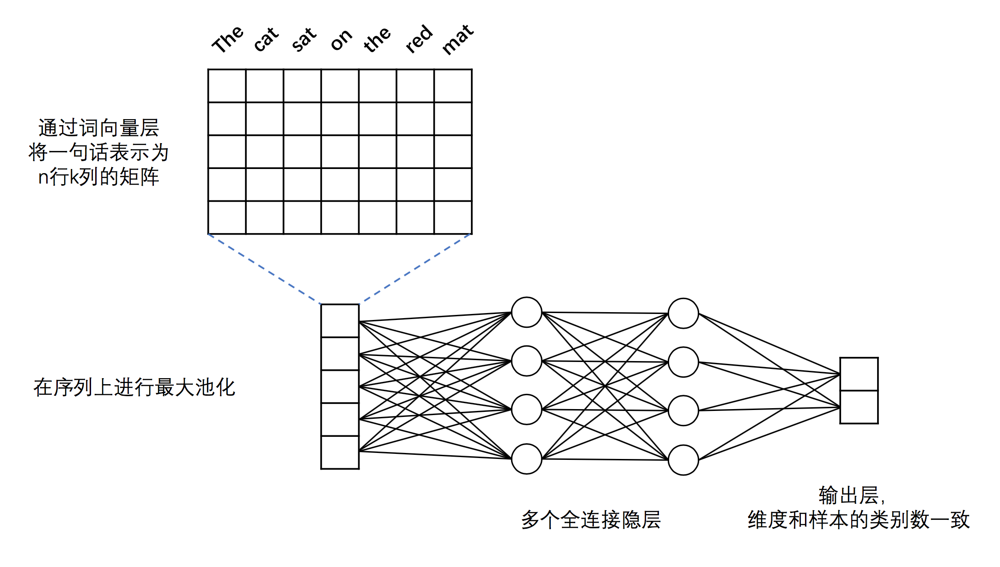
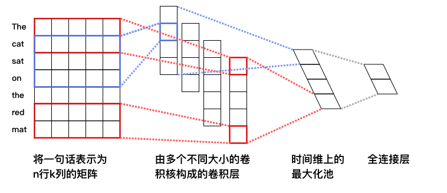

文本分类
文本分类
以下是本例目录包含的文件以及对应说明:
.
├── images # 文档中的图片
│ ├── cnn_net.png
│ └── dnn_net.png
├── index.html # 文档
├── infer.py # 预测脚本
├── network_conf.py # 本例中涉及的各种网络结构均定义在此文件中，若进一步修改模型结构，请查看此文件
├── reader.py # 读取数据接口，若使用自定义格式的数据，请查看此文件
├── README.md # 文档
├── run.sh # 训练任务运行脚本，直接运行此脚本，将以默认参数开始训练任务
├── train.py # 训练脚本
└── utils.py # 定义通用的函数，例如：打印日志、解析命令行参数、构建字典、加载字典等
简介
文本分类任务根据给定一条文本的内容，判断该文本所属的类别，是自然语言处理领域的一项重要的基础任务。PaddleBook 中的情感分类一课，正是一个典型的文本分类任务，任务流程如下：
- 收集电影评论网站的用户评论数据。
- 清洗，标记。
- 模型设计。
- 模型学习效果评估。
训练好的分类器能够自动判断新出现的用户评论的情感是正面还是负面，在舆情监控、营销策划、产品品牌价值评估等任务中，能够起到重要作用。以上过程也是我们去完成一个新的文本分类任务需要遵循的常规流程。可以看到，深度学习方法的巨大优势体现在：免除复杂的特征的设计，只需要对原始文本进行基础的清理、标注即可。
PaddleBook 中的情感分类介绍了一个较为复杂的栈式双向 LSTM 模型，循环神经网络在一些需要理解语言语义的复杂任务中有着明显的优势，但计算量大，通常对调参技巧也有着更高的要求。在对计算时间有一定限制的任务中，也会考虑其它模型。除了计算时间的考量，更重要的一点：模型选择往往是机器学习任务成功的基础。机器学习任务的目标始终是提高泛化能力，也就是对未知的新的样本预测的能力：
- 简单模型拟合能力不足，无法精确拟合训练样本，更加无法期待模型能够准确地预测没有出现在训练样本集中的未知样本，这就是欠拟合问题。
- 然而，过于复杂的模型轻松“记忆”了训练样本集中的每一个样本，但对于没有出现在训练样本集中的未知样本却毫无识别能力，这就是过拟合问题。
“No Free Lunch (NFL)” 是机器学习任务基本原则之一：没有任何一种模型是天生优于其他模型的。模型的设计和选择建立在了解不同模型特性的基础之上，但同时也是一个多次实验评估的过程。在本例中，我们继续向大家介绍几种最常用的文本分类模型，它们的能力和复杂程度不同，帮助大家对比学习这些模型学习效果之间的差异，针对不同的场景选择使用。
模型详解
network_conf.py 中包括以下模型：
fc_net： DNN 模型，是一个非序列模型。使用基本的全连接结构。convolution_net：浅层 CNN 模型，是一个基础的序列模型，能够处理变长的序列输入，提取一个局部区域之内的特征。
我们以情感分类任务为例，简单说明序列模型和非序列模型之间的差异。情感分类是一项常见的文本分类任务，模型自动判断文本中表现出的情感是正向还是负向。以句子 “The apple is not bad” 为例，”not bad” 是决定这个句子情感的关键：
- 对于 DNN 模型来说，只知道句子中有一个 “not” 和一个 “bad”，两者之间的顺序关系在输入网络时已丢失，网络不再有机会学习序列之间的顺序信息。
- CNN 模型接受文本序列作为输入，保留了 “not bad” 之间的顺序信息。
两者各自的一些特点简单总结如下：
- DNN 的计算量可以远低于 CNN / RNN 模型，在对响应时间有要求的任务中具有优势。
- DNN 刻画的往往是频繁词特征，潜在会受到分词错误的影响，但对一些依赖关键词特征也能做的不错的任务：如 Spam 短信检测，依然是一个有效的模型。
- 在大多数需要一定语义理解（例如，借助上下文消除语义中的歧义）的文本分类任务上，以 CNN / RNN 为代表的序列模型的效果往往好于 DNN 模型。
1. DNN 模型
DNN 模型结构入下图所示：

图1. 本例中的 DNN 文本分类模型
在 PaddlePaddle 实现该 DNN 结构的代码见 network_conf.py 中的 fc_net 函数，模型主要分为如下几个部分：
-
词向量层：为了更好地表示不同词之间语义上的关系，首先将词语转化为固定维度的向量。训练完成后，词与词语义上的相似程度可以用它们的词向量之间的距离来表示，语义上越相似，距离越近。关于词向量的更多信息请参考PaddleBook中的词向量一节。
-
最大池化层：最大池化在时间序列上进行，池化过程消除了不同语料样本在单词数量多少上的差异，并提炼出词向量中每一下标位置上的最大值。经过池化后，词向量层输出的向量序列被转化为一条固定维度的向量。例如，假设最大池化前向量的序列为
[[2,3,5],[7,3,6],[1,4,0]]，则最大池化的结果为：[7,4,6]。 -
全连接隐层：经过最大池化后的向量被送入两个连续的隐层，隐层之间为全连接结构。
-
输出层：输出层的神经元数量和样本的类别数一致，例如在二分类问题中，输出层会有2个神经元。通过Softmax激活函数，输出结果是一个归一化的概率分布，和为1，因此第$i$个神经元的输出就可以认为是样本属于第$i$类的预测概率。
该 DNN 模型默认对输入的语料进行二分类（class_dim=2），embedding（词向量）维度默认为28（emd_dim=28），两个隐层均使用Tanh激活函数（act=paddle.activation.Tanh()）。需要注意的是，该模型的输入数据为整数序列，而不是原始的单词序列。事实上，为了处理方便，我们一般会事先将单词根据词频顺序进行 id 化，即将词语转化成在字典中的序号。
2. CNN 模型
CNN 模型结构如下图所示：

图2. 本例中的 CNN 文本分类模型
通过 PaddlePaddle 实现该 CNN 结构的代码见 network_conf.py 中的 convolution_net 函数，模型主要分为如下几个部分:
-
词向量层：与 DNN 中词向量层的作用一样，将词语转化为固定维度的向量，利用向量之间的距离来表示词之间的语义相关程度。如图2所示，将得到的词向量定义为行向量，再将语料中所有的单词产生的行向量拼接在一起组成矩阵。假设词向量维度为5，句子 “The cat sat on the read mat” 含 7 个词语，那么得到的矩阵维度为 7*5。关于词向量的更多信息请参考 PaddleBook 中的词向量一节。
-
卷积层： 文本分类中的卷积在时间序列上进行，即卷积核的宽度和词向量层产出的矩阵一致，卷积沿着矩阵的高度方向进行。卷积后得到的结果被称为“特征图”（feature map）。假设卷积核的高度为 $h$，矩阵的高度为 $N$，卷积的步长为 1，则得到的特征图为一个高度为 $N+1-h$ 的向量。可以同时使用多个不同高度的卷积核，得到多个特征图。
-
最大池化层: 对卷积得到的各个特征图分别进行最大池化操作。由于特征图本身已经是向量，因此这里的最大池化实际上就是简单地选出各个向量中的最大元素。各个最大元素又被拼接在一起，组成新的向量，显然，该向量的维度等于特征图的数量，也就是卷积核的数量。举例来说，假设我们使用了四个不同的卷积核，卷积产生的特征图分别为：
[2,3,5]、[8,2,1]、[5,7,7,6]和[4,5,1,8]，由于卷积核的高度不同，因此产生的特征图尺寸也有所差异。分别在这四个特征图上进行最大池化，结果为：[5]、[8]、[7]和[8]，最后将池化结果拼接在一起，得到[5,8,7,8]。 -
全连接与输出层：将最大池化的结果通过全连接层输出，与 DNN 模型一样，最后输出层的神经元个数与样本的类别数量一致，且输出之和为 1。
CNN 网络的输入数据类型和 DNN 一致。PaddlePaddle 中已经封装好的带有池化的文本序列卷积模块：paddle.networks.sequence_conv_pool，可直接调用。该模块的 context_len 参数用于指定卷积核在同一时间覆盖的文本长度，即图 2 中的卷积核的高度。hidden_size 用于指定该类型的卷积核的数量。本例代码默认使用了 128 个大小为 3 的卷积核和 128 个大小为 4 的卷积核，这些卷积的结果经过最大池化和结果拼接后产生一个 256 维的向量，向量经过一个全连接层输出最终的预测结果。
使用 PaddlePaddle 内置数据运行
如何训练
在终端中执行 sh run.sh 以下命令， 将以 PaddlePaddle 内置的情感分类数据集：paddle.dataset.imdb 直接运行本例，会看到如下输入：
Pass 0, Batch 0, Cost 0.696031, {'__auc_evaluator_0__': 0.47360000014305115, 'classification_error_evaluator': 0.5}
Pass 0, Batch 100, Cost 0.544438, {'__auc_evaluator_0__': 0.839249312877655, 'classification_error_evaluator': 0.30000001192092896}
Pass 0, Batch 200, Cost 0.406581, {'__auc_evaluator_0__': 0.9030032753944397, 'classification_error_evaluator': 0.2199999988079071}
Test at Pass 0, {'__auc_evaluator_0__': 0.9289745092391968, 'classification_error_evaluator': 0.14927999675273895}
日志每隔 100 个 batch 输出一次，输出信息包括：（1）Pass 序号；（2）Batch 序号；（3）依次输出当前 Batch 上评估指标的评估结果。评估指标在配置网络拓扑结构时指定，在上面的输出中，输出了训练样本集之的 AUC 以及错误率指标。
如何预测
训练结束后模型默认存储在当前工作目录下，在终端中执行 python infer.py ，预测脚本会加载训练好的模型进行预测。
- 默认加载使用
paddle.data.imdb.train训练一个 Pass 产出的 DNN 模型对paddle.dataset.imdb.test进行测试
会看到如下输出：
positive 0.9275 0.0725 previous reviewer <unk> <unk> gave a much better <unk> of the films plot details than i could what i recall mostly is that it was just so beautiful in every sense emotionally visually <unk> just <unk> br if you like movies that are wonderful to look at and also have emotional content to which that beauty is relevant i think you will be glad to have seen this extraordinary and unusual work of <unk> br on a scale of 1 to 10 id give it about an <unk> the only reason i shy away from 9 is that it is a mood piece if you are in the mood for a really artistic very romantic film then its a 10 i definitely think its a mustsee but none of us can be in that mood all the time so overall <unk>
negative 0.0300 0.9700 i love scifi and am willing to put up with a lot scifi <unk> are usually <unk> <unk> and <unk> i tried to like this i really did but it is to good tv scifi as <unk> 5 is to star trek the original silly <unk> cheap cardboard sets stilted dialogues cg that doesnt match the background and painfully onedimensional characters cannot be overcome with a scifi setting im sure there are those of you out there who think <unk> 5 is good scifi tv its not its clichéd and <unk> while us viewers might like emotion and character development scifi is a genre that does not take itself seriously <unk> star trek it may treat important issues yet not as a serious philosophy its really difficult to care about the characters here as they are not simply <unk> just missing a <unk> of life their actions and reactions are wooden and predictable often painful to watch the makers of earth know its rubbish as they have to always say gene <unk> earth otherwise people would not continue watching <unk> <unk> must be turning in their <unk> as this dull cheap poorly edited watching it without <unk> breaks really brings this home <unk> <unk> of a show <unk> into space spoiler so kill off a main character and then bring him back as another actor <unk> <unk> all over again
输出日志每一行是对一条样本预测的结果，以 \t 分隔，共 3 列，分别是：（1）预测类别标签；（2）样本分别属于每一类的概率，内部以空格分隔；（3）输入文本。
使用自定义数据训练和预测
如何训练
-
数据组织
假设有如下格式的训练数据：每一行为一条样本，以
\t分隔，第一列是类别标签，第二列是输入文本的内容，文本内容中的词语以空格分隔。以下是两条示例数据：positive PaddlePaddle is good negative What a terrible weather -
编写数据读取接口
自定义数据读取接口只需编写一个 Python 生成器实现从原始输入文本中解析一条训练样本的逻辑。以下代码片段实现了读取原始数据返回类型为：
paddle.data_type.integer_value_sequence（词语在字典的序号）和paddle.data_type.integer_value（类别标签）的 2 个输入给网络中定义的 2 个data_layer的功能。def train_reader(data_dir, word_dict, label_dict): def reader(): UNK_ID = word_dict["<UNK>"] word_col = 0 lbl_col = 1 for file_name in os.listdir(data_dir): with open(os.path.join(data_dir, file_name), "r") as f: for line in f: line_split = line.strip().split("\t") word_ids = [ word_dict.get(w, UNK_ID) for w in line_split[word_col].split() ] yield word_ids, label_dict[line_split[lbl_col]] return reader- 关于 PaddlePaddle 中
data_layer接受输入数据的类型，以及数据读取接口对应该返回数据的格式，请参考 input-types 一节。 - 以上代码片段详见本例目录下的
reader.py脚本，reader.py同时提供了读取测试数据的全部代码。
接下来，只需要将数据读取函数
train_reader作为参数传递给train.py脚本中的paddle.batch接口即可使用自定义数据接口读取数据，调用方式如下：train_reader = paddle.batch( paddle.reader.shuffle( reader.train_reader(train_data_dir, word_dict, lbl_dict), buf_size=1000), batch_size=batch_size) - 关于 PaddlePaddle 中
-
修改命令行参数
- 如果将数据组织成示例数据的同样的格式，只需在
run.sh脚本中修改train.py启动参数，指定train_data_dir参数，可以直接运行本例，无需修改数据读取接口reader.py。 - 执行
python train.py --help可以获取train.py脚本各项启动参数的详细说明，主要参数如下：nn_type：选择要使用的模型，目前支持两种：“dnn” 或者 “cnn”。train_data_dir：指定训练数据所在的文件夹，使用自定义数据训练，必须指定此参数，否则使用paddle.dataset.imdb训练，同时忽略test_data_dir，word_dict，和label_dict参数。test_data_dir：指定测试数据所在的文件夹，若不指定将不进行测试。word_dict：字典文件所在的路径，若不指定，将从训练数据根据词频统计，自动建立字典。label_dict：类别标签字典，用于将字符串类型的类别标签，映射为整数类型的序号。batch_size：指定多少条样本后进行一次神经网络的前向运行及反向更新。num_passes：指定训练多少个轮次。
- 如果将数据组织成示例数据的同样的格式，只需在
如何预测
-
修改
infer.py中以下变量，指定使用的模型、指定测试数据。model_path = "dnn_params_pass_00000.tar.gz" # 指定模型所在的路径 nn_type = "dnn" # 指定测试使用的模型 test_dir = "./data/test" # 指定测试文件所在的目录 word_dict = "./data/dict/word_dict.txt" # 指定字典所在的路径 label_dict = "./data/dict/label_dict.txt" # 指定类别标签字典的路径 -
在终端中执行
python infer.py。